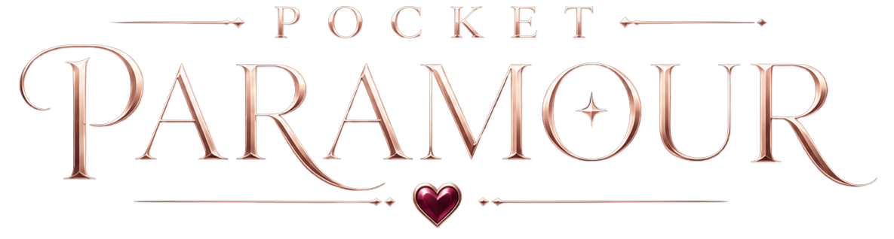

❤️
Pocket Paramour
They remember everything you do.
Start
care for them... or lose them.
‹
tap to continue
COMPANION CHRONICLE
Every care leaves a mark.
✧ CURRENT STORY
Prologue
A Kingdom Fades
✦
Pick up where you left off.
CONTINUE STORY
→
✦
PROGRESS
0 / 9
✦ ACTIVE COMPANION ✦
???
Unknown
STRANGER
–
BOND LEVEL
— / 9
Begin Chapter 1 to meet your first companion.
✦
BEGIN CHAPTER 1
♡
OTHER THREADS OF FATE
🔒
???
UNKNOWN
🔒
LOCKED
🔒
???
UNKNOWN
🔒
LOCKED
🔒
???
UNKNOWN
🔒
LOCKED
🔒
???
UNKNOWN
🔒
LOCKED
🔒
???
UNKNOWN
🔒
LOCKED
🔒
???
SEALED
🔒
LOCKED
🔒
???
UNKNOWN
🔒
LOCKED
DAILY
COMPANIONS
STORY
SHOP
MORE
Pocket Paramour
Take care of them...
‹
🍖
Hunger
💧
Clean
❤️
Bond
Stranger
🏆
🃏
⚙️
☰
They're studying you.
mood
z
z
Z
✨ Kingdom
…
tap to continue
Feed
Wash
Gift
Train
Talk
Choose a Gift
✕
Choose Training
✕
⚔️
Sword Forms
Swift and precise
💪
Strength
Raw and relentless
🧘
Focus
Steel the mind
Alistair
Continue
🏆 Achievements
✕
Try Again
tap to continue
Start Over
Stay
❤
A Letter
tap to continue
Share
Keep
Settings
✕
Audio
SFX Volume
Music Volume
Music
🎵 On
Story
Current Character
Name
Stats
Switch Character
Reset
Reset This Character
Reset Entire Game
About
Pocket Paramour
A Tamagotchi x Otome Game
Created with love
v1.0
Gallery
0 / 8
✕
Skip
tap to continue
✓
Swipe to browse • Tap image to zoom
Close
DEV
Trust
–
Fear
–
Obsess
–
Tension
–
Corrupt
–
State
–
Phase
–
Displayed
–
MidShift
–
` toggle